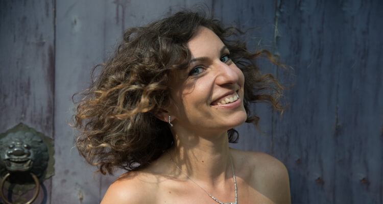

past events
aktuelles 2019
11.11.18, Erbach, Odenwald Concert " Space Jump" with Limes Trio and Peter Zelienka
04.11.18, Frankfurt am Main, Germany Concert " Space Jump " with Limes Trio and Peter Zelienka in the symphony Orchestra Hall of the Hessian Radio
20.10.18, Biel, Switzerland Recital with Michael Buchanan at the Cultural Centre La Prairie Bellmund
03.04-08.04.18, Fünfbrunnen, Luxemburg Violin / Chamber Music Masterclass at Kloster Fünfbrunnen More information
14.05- 19.05.18, Ettelbruck, Luxembourg Masterclass More information
13.05.18, Odenthal, Germany Recital with Giulliano Sommerhalder More information
22.04.18, Marnach, Luxemburg Solo Recital More information
13.04.18. Hildesheim, Germany Recital with Michaela Ische and Lars Cleveman More information
10.12.17, Ettlingen, Germany Recital at the Ettlinger Schlosskonzerte
06.12.17, Rödermark, Germany Limes Trio in Rödermark
02.12.2017, Davos, Switzerland Recital in Davos
21.11.17. - Frankfurt am Main, Germany Recital with Sandro Roy at the ECB Frankfurt More information
18.11.17, Würzburg, Germany Limes Trio in Würzburg
21.10.17 - 01.11.17, Hamburg, Germany Mediterranean Concert Tour in Mein Schiff 3 with Members of the Hamburg State Opera More information
03.10.17, Warsaw, Poland Recital at the Wellness Conference
05.09.17, Lucerne, Switzerland Recital in Lucerne Festival More information
25.08.17, Hanau, Germany Private Concert in Schloss Phillipsruhe More information
09.08.17, London, England Recital in Conway Hall More information
22.07.17, Torun, Poland Recital in Torun More information
21.06.17, Frankfurt, Germany Class Concert Prof. Sophia Jaffe HFMDK More information
15.06.17, Luxembourg City, Luxembourg Concert in Luxembourg
25.05.17, Frankfurt, Germany Class Concert Prof. Sophia Jaffe HFMDK More information
08.05.17, Newbury, England Recital in Newbury More information
30.03.17, Frankfurt, Germany Limes Trio in ECB European Central Bank
01-08.04.17, Nord Ettelbruck, Luxemburg Piano Masterclass at the Conservatoire More information
27.01. 17, Wells College, England Recital at the Wells College More information
13.01.17, Luxemburg City, Luxemburg Luxembourg Philiharmonie: Prix Anne Francoise Groben More information
12.01.17, Frankfurt, Germany Class Concert Prof. Sophia Jaffe, HFMDK More information
21.11.16, Pattaya, Thailand Recital in Pattaya
10-20.11.16, Bangkok, Thailand Jury member at the International Chopin Competition in Bangkok More information
08.11.16, Hannover, Germany Recital in Hannover, DE More information
30.10.16, Frankfurt, Germany Limes Trio in the Frankfurt State Opera More information
06.10.16, Ravensburg, Germany Limes Trio in Ravensburg More information
02.10.16, Bonn, Germany Recital at Beethoven Fest Bonn More information
04-09.08.16, Groba, Spain Festival Groba More information
25-31.07.16, ?, Spain Delta Chamber Music Festival
25.06.16, Nafplio, Greece Recital in Nafplio Festival More information
09.06.16, Frankfurt, Germany Class Concert Prof. Sophia Jaffe DE More information
16.05.16, Schwarzwald, Germany Recital in Schwarzwald Festival More information
01.05.16, Maarnach, Luvemburg Limes Trio in Maarnach More information
30.04.16, Maarnach, Luvemburg Recital in Maarnach More information
26.04.16, Wiesbaden, Germany Jazz Concert at the Film Festival Go East in Wiesbaden More information
21-26.03.16, Ettelbruck, Luxembourg Piano Masterclass at Conservatoire du Nord in Ettelbruck in Luxembourg More information
05.03.16, Stuttgart, Germany Concert with Spark Ensemble, Stuttgart Theater More information
20-29.02.16, Torun, Poland International Violin Competition in Torun More information
18.02.16, Essen, Germany Recital at Bürgermeister Haus Essen Werden More information
14.01.16, Frankfurt, Germany Class Concert Prof. Sophia Jaffe More information